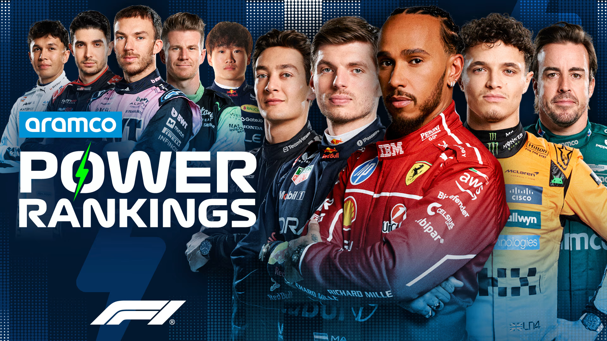

POWER RANKINGS
F1 UNLOCKED
2025
POWER RANKINGS: WHO IMPRESSED OUR JUDGES AMID THE DRAMA AT ZANDVOORT?
Find out which drivers featured in the Power Rankings top 10 with their perfomances at the Dutch Grand Prix.
18 hours ago

It was a dramatic weekend at Zandvoort, with Oscar Piastri winning, team mate Lando Norris retiring, Isack Hadjar scoring a maiden podium finish and Ferrari suffering a double DNF. So, who impressed our judges through it all? Check out the latest scores and overall leaderboard below...
HOW IT WORKS
- Our five-judge panel assess each driver after every Grand Prix and score them out of 10 according to their performance across the weekend – taking machinery out of the equation
- Our experts’ scores are then averaged out to produce a race score – with those scores then tallied up across the season on our overall Power Rankings Leaderboard (at the bottom of the page)